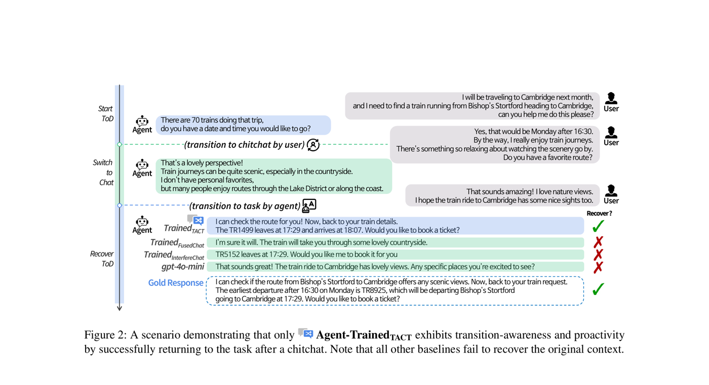

TACT는 목적 지향 대화(TOD)와 일상 대화(chitchat) 간의 구조적으로 다양한 모드 전환을 포함하는 대규모 데이터셋(SLURP 기반 9,936개 + MultiWOZ 기반 7,109개 대화)으로, 새로운 Switch/Recovery 평가 지표와 DPO 기반 학습 프레임워크를 통해 75.74%의 joint mode-intent accuracy와 GPT-4o 대비 70.1%의 인간 평가 승률을 달성합니다.

대화형 에이전트는 전통적으로 목적 지향 대화(TOD) 시스템 또는 개방형 일상 대화 중 하나만을 위해 개발되어 왔으며, 이 둘을 통합하는 데는 제한적인 진전만 있었습니다. 그러나 실제 대화에서는 이러한 모드 간의 유동적인 전환이 자연스럽게 발생합니다. 예를 들어, 기차표를 예약하던 사용자가 갑자기 경치 좋은 노선에 대해 이야기하다가 다시 예약 업무로 돌아오기를 기대할 수 있습니다.
기존 데이터셋의 문제: FusedChat, InterfereChat 등 기존 모드 전환 데이터셋은 TOD와 chitchat 간에 단 한 번의 전환(최대 1개 전환점)만 허용하며 구조적 다양성이 부족합니다. TOD 중심의 관점을 고수하여 고정된 지점에 일상 대화를 단일 교환으로 삽입하는 방식이므로, 실제 대화에서 발생하는 동적인 다중 턴 전환을 모델링하기에 부적합합니다.
두 가지 핵심 능력의 부재: 현재 시스템에는 (1) 전환 인식(transition-awareness) -- 모드 변화를 감지하고 적응하는 능력, 그리고 (2) 능동성(proactivity) -- 적절한 시점에 대화 흐름을 주도적으로 이끄는 능력이 부족합니다. TACT는 에이전트가 다중 턴에 걸쳐 모드 전환을 개시하고 복구할 수 있어야 하는 최초의 데이터셋입니다.
TACT(TOD-And-Chitchat Transition)는 두 개의 기존 TOD 코퍼스인 MultiWOZ 2.2와 SLURP를 구조적으로 다양한 일상 대화 전환으로 확장하여 구축됩니다. 두 가지 핵심 대화 흐름 유형이 정의됩니다:
| 통계 | TACTMultiWOZ | TACTSLURP |
|---|---|---|
| 의도(Intent) 수 | 11 | 50+ |
| 대화 수 | 7,109 | 9,936 |
| 평균 턴 수 | 15.04 | 16.42 |
| 평균 Switch 수 | 1.93 | 2.06 |
| 평균 Recovery 수 | 0.93 | 1.07 |
| 고유 흐름 유형 수 | 11 | 12 |
| 흐름 패턴 | TCT, CTC, TCTCT 등 | |
모든 SFT 모델은 LLaMA-3.1-8B-Instruct로 초기화되고 학습률 1e-5, 배치 크기 256으로 3 에폭 학습됩니다. ICL(GPT-4o 기반 zero-shot/few-shot), SFT, SFT-DPO, 생성적 분류기 기반 Pipeline의 4가지 방법을 비교합니다.
| 방법 | 모드 Acc. | 모드 F1 | 의도 Acc./턴 | Joint Acc./턴 | Joint Acc./대화 | Switch 시도 | Switch 성공 | 복구 시도 | 복구 성공 | Chitchat 승률 |
|---|---|---|---|---|---|---|---|---|---|---|
| ICL-ZS | 90.46 | 86.21 | 87.57 | 85.01 | 30.00 | 0.879 | 0.374 | 0.880 | 0.099 | - |
| ICL-FS | 91.45 | 88.98 | 84.09 | 86.89 | 36.76 | 1.577 | 0.865 | 1.571 | 0.652 | - |
| SFT | 98.95 | 98.50 | 96.35 | 96.41 | 75.59 | 1.322 | 1.300 | 0.977 | 0.856 | 23.16 |
| SFT-DPO | 98.82 | 98.32 | 96.03 | 96.21 | 75.74 | 1.343 | 1.322 | 0.977 | 0.859 | 40.86 |
| Pipeline | 98.95 | 98.50 | 96.35 | 96.41 | 75.59 | 1.322 | 1.300 | 0.977 | 0.856 | 24.32 |
10명의 평가자가 DPO와 GPT-4o(few-shot)를 77개 대화에 대해 동점 없이 비교 평가:
| 기준 | DPO 승률 % | DPO 패률 % |
|---|---|---|
| Sensibleness (합리성) | 71.4 | 28.6 |
| Specificity (구체성) | 77.9 | 22.1 |
| Interestingness (흥미도) | 71.4 | 28.6 |
| Transition Naturalness (전환 자연성) | 81.9 | 18.2 |
| 종합 | 70.1 | 14.3 |
TACT로 학습된 에이전트만이 0이 아닌 전환 인식 점수를 달성합니다. FusedChat과 InterfereChat으로 학습된 모델은 다중 턴 전환 구조의 부재로 인해 switch/recovery 시도가 0입니다:
| 학습 데이터 | 평균 Joint Acc./턴 | 평균 Joint Acc./대화 | Switch 시도 | Switch 성공 | 복구 성공 |
|---|---|---|---|---|---|
| FusedChat | 92.25 | 56.13 | 0.000 | 0.000 | - |
| InterfereChat | 84.82 | 35.39 | 0.000 | 0.000 | - |
| TACTMultiWOZ | 92.11 | 58.60 | 1.322 | 1.300 | 0.856 |
실제 배포된 대화 시스템에서는 사용자가 단일 세션 내에서 업무 요청과 일상 대화를 오가는 경우가 빈번합니다. TACT는 구조적으로 다양한 다중 턴 전환과 복구 가능한 대화 구조로 대화의 유동성을 모델링하는 최초의 데이터셋입니다. TACT의 다양한 학습 데이터와 DPO를 통한 선호도 최적화를 결합함으로써, 결과 에이전트는 단순한 응답 정확도를 넘어 참여도, 흐름 연속성, 전환 부드러움과 같은 소프트 대화 기술을 학습합니다. 오픈소스 데이터셋(HuggingFace)과 코드(GitHub)는 보다 자율적이고 예측적인 대화형 에이전트 구축의 길을 열어줍니다.